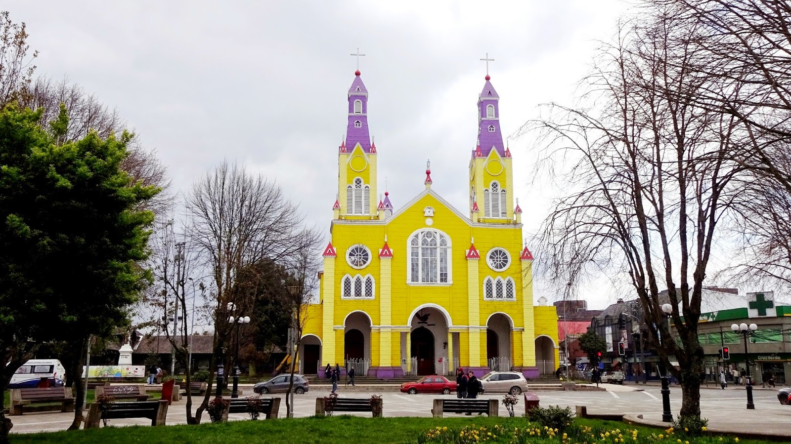
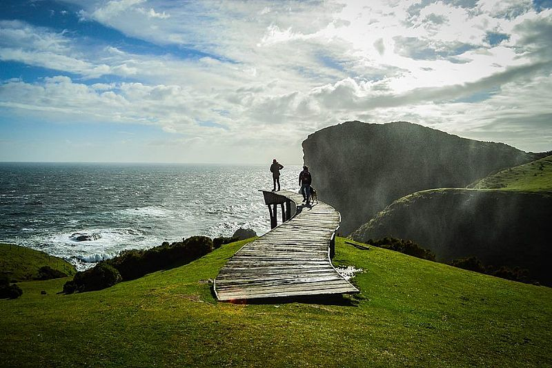

Los habitantes de la Isla Grande de Chiloé se caracterizan por sus peculiaridades, siendo muy religiosos y con una firme tradición mitológica y cultural.
Solo hay que cruzar el Canal de Chacao en el ferry que parte de Puerto Montt para entrar en un mundo de misterios, buques fantasmas, duendes, hadas y sirenas, en los que creen los recios y reservados isleños.
La isla tiene bellas calas, grades áreas boscosas y pequeñas localidades que viven lidiando con los fuertes vientos, mareas y otras adversidades del clima.
En la Isla Grande de Chiloé, la mayor de las que forman el archipiélago de Chiloé, preparan curanto, un exquisito platillo a base de carne, mariscos y vegetales cocidos sobre piedras en un hoyo.
Conoce Isla de Chiloé
Es la segunda isla más grande de América del Sur con tan sólo cinco islas sin habitar de las cuarenta que la conforman. El paisaje natural se conserva casi en su totalidad sin intervención del hombre como la que se conserva en el Parque Nacional Chiloé, el cual combina con un escenario cultural de gran riqueza mítica y costumbrista. La arquitectura, por su parte, cobra relevancia por sus “palafitos” características construcciones en madera y por la influencia religiosa de los siglos XVIII y XIX en capillas e iglesias, reconocidas como patrimonio por la UNESCO. El destino ofrece a los visitantes además posibilidades de practicar el agroturismo y una exquisita gastronomía marina y de cazuelas y asados de cerdo, cordero y vacuno.
¿Que visitar en Chiloé?
°IGLESIA DE SAN FRANCISCO, CASTRO
Ubicada en la Plaza de Armas de la ciudad de Castro en Chiloé, se encuentra la Iglesia de San Francisco, uno de los más hermosos tesoros de la arquitectura católica en la Isla de Chiloé. Está en la lista del Patrimonio Mundial de Unesco y es una de las 16 iglesias del archipiélago de Chiloé que son consideradas como patrimonio.
°MUELLE DE LAS ALMAS, CUCAO
El Muelle de las Almas es un imperdible de un viaje por la Isla de Chiloé, se encuentra al oeste de la Isla en la comuna de Chonchi. Es un lugar hermoso sobre el acantilado y el sendero para llegar es de alta belleza escénica por unos campos sobre el mar.
°PARQUE NACIONAL CHILOÉ
El Parque Nacional Chiloé se encuentra en la costa occidental de la isla grande de Chiloé. Es un área natural protegida donde se encuentra gran parte de la flora y fauna de la isla, tiene senderos que recorren sus bosques y te llevarán a hermosos miradores con paisajes increíbles.